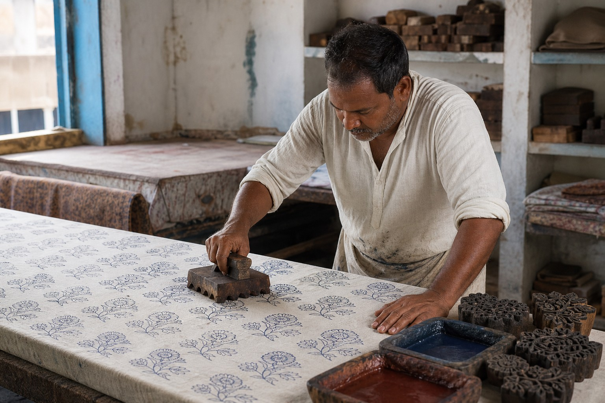
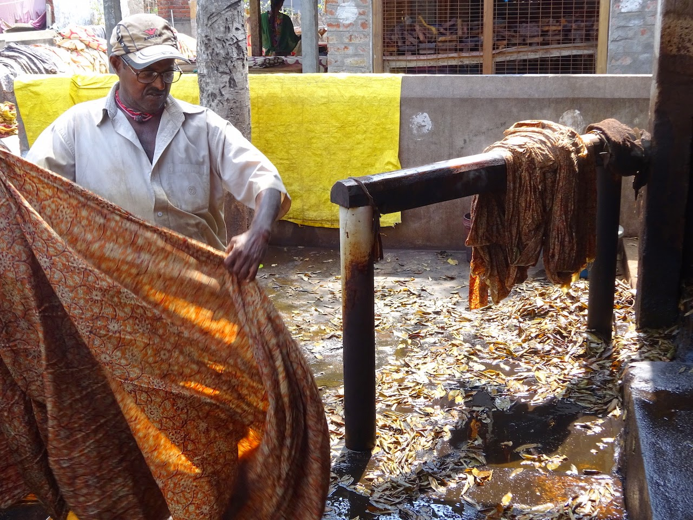
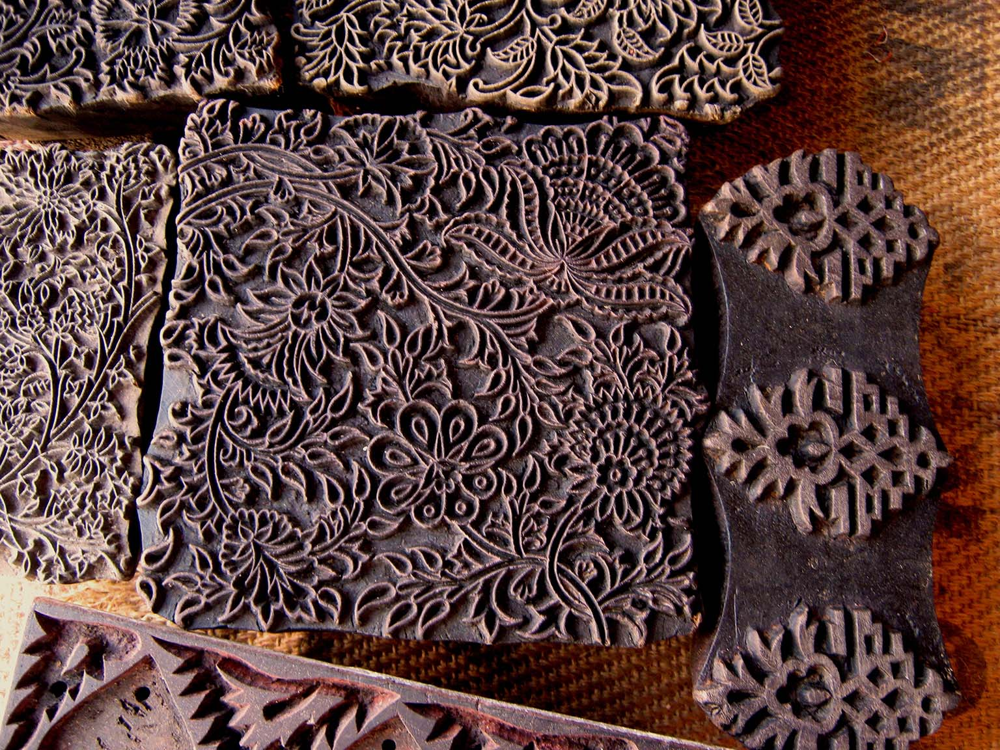
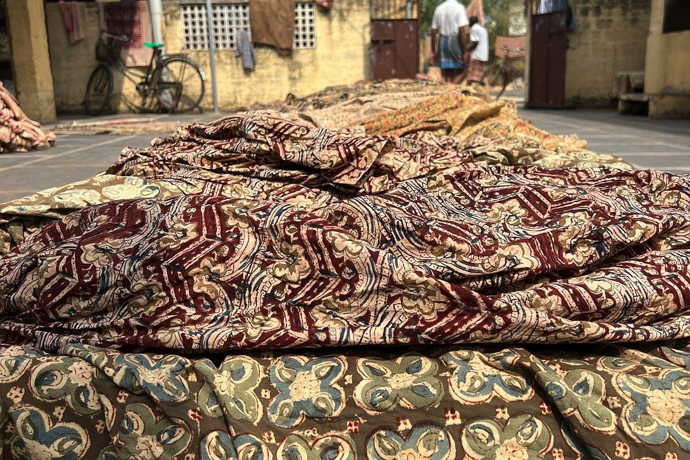
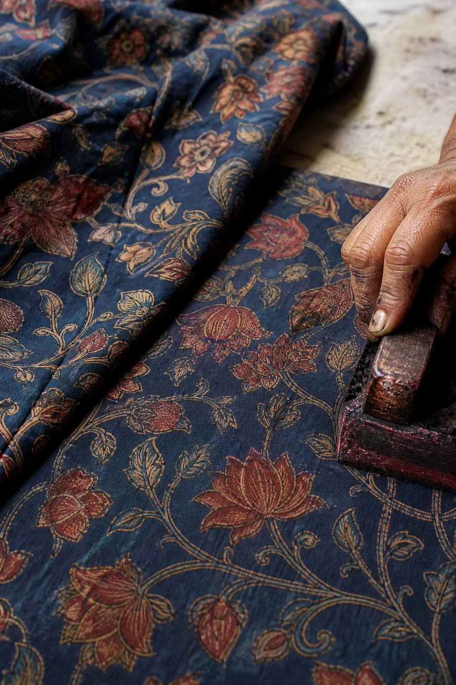

Prepare the cloth
The fabric is washed and prepared before printing begins.
Machilipatnam / Pedana Kalamkari belongs to the block-printing tradition of Andhra’s Krishna coast — where carved blocks, cloth, colour and repeated hand processes create textiles carrying a distinct regional identity.
Pedana and neighbouring areas around Machilipatnam form an important Kalamkari production centre. Krishna District’s One District One Product material identifies Pedana as a specialist cluster within this textile tradition.
For QVibe, this coastal location matters not only geographically. It connects the living craft with a much older history of textile production and trade along the Coromandel Coast.

Machilipatnam / Pedana Kalamkari is a block-print process. This page does not mix it with Srikalahasthi’s distinct freehand tradition.
The fabric is washed and prepared before printing begins.
Traditional process descriptions include treating the cloth with myrobalan before later colour stages.
Hand-carved wooden blocks build outlines and repeating motifs through repeated impressions.
Different colour stages develop through printing, treatment and washing rather than a single mechanical print pass.
Washing and drying remain part of the process, so environment and human judgement continue to matter.


Museum collections and textile history document painted and dyed cottons from India’s Coromandel Coast made for overseas markets during the 17th and 18th centuries.
That does not mean a particular modern Pedana workshop supplied those historic markets. It gives us a wider regional story: cloth from this coast has interacted with the world for centuries.
QVibe is not inventing the idea of Andhra cloth travelling.
The question is what travels with it today.


India exported approximately ₹3,216.94 crore of handprinted textiles in FY2024–25.
Of that broader handprinted-textile category went to the UAE in FY2024–25.
These figures describe India’s broader handprinted-textile export category — not Kalamkari or QVibe sales. They show that international demand for handprinted textile products already exists at meaningful scale.
Official product examples include sarees, clothing material, rugs, towels, bed covers, door covers and paintings. This matters because diversification is not a theoretical idea QVibe is imposing on the craft. The tradition already appears across multiple textile and decorative formats.
Cloth carried and worn through a familiar form.
Repeat pattern moving into everyday textile contexts.
Printed and dyed surfaces presented as visual narrative.
Cloth marking thresholds and interior space.
Larger pattern fields shaped through repetition.
A flexible base for different garments and uses.
QVibe wants to explore how stronger presentation of place, block, maker, process and regional identity might help people recognise Machilipatnam / Pedana Kalamkari as more than simply another printed textile.
QVibe exploration